Ce qui n’allait pas dans l’app et ce qu’on a changé, écran par écran. Règle suivie : on retire tout ce qui ne sert pas et on garde un seul chemin clair pour chaque action.
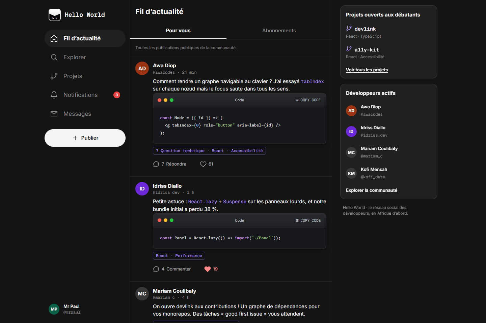
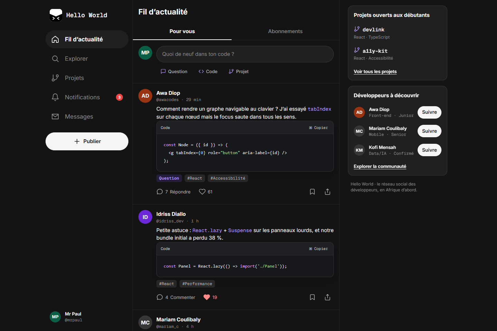
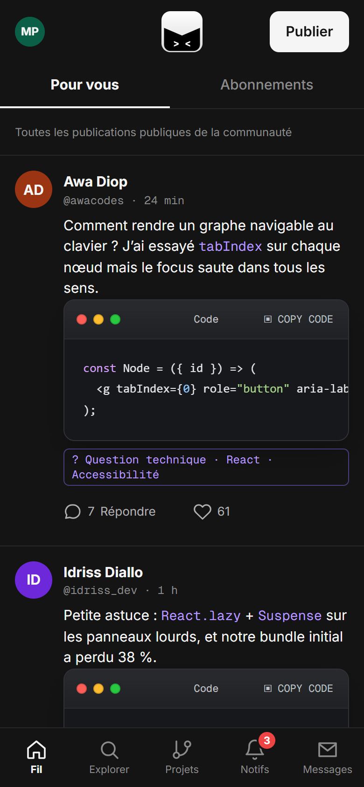
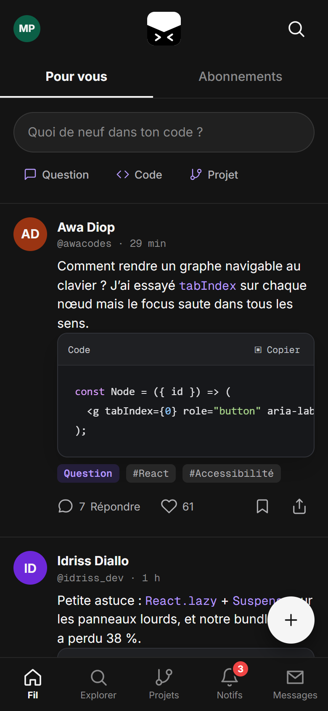
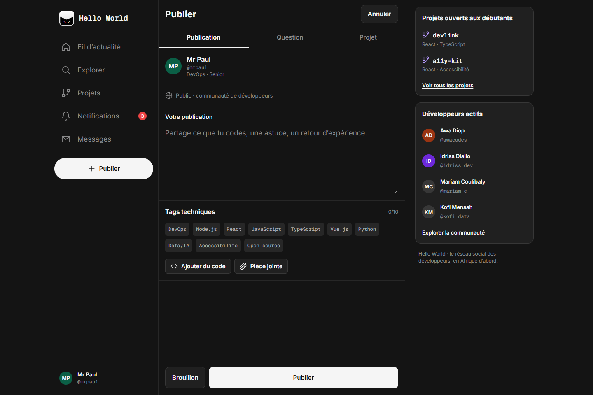
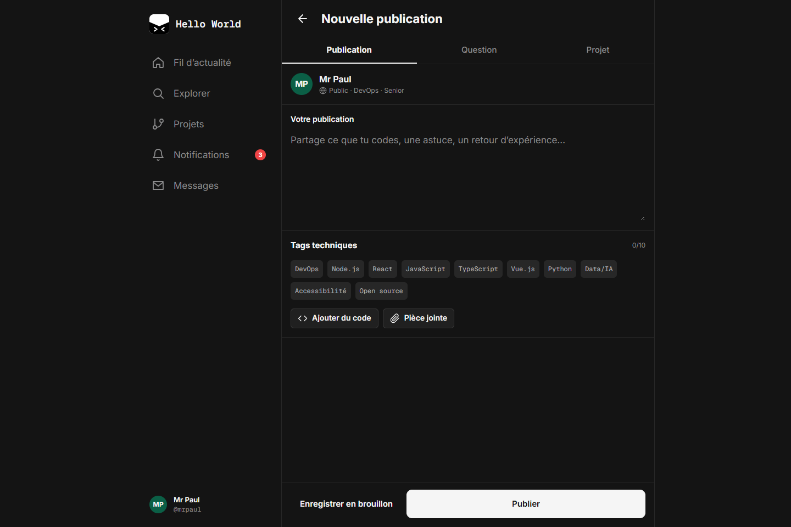
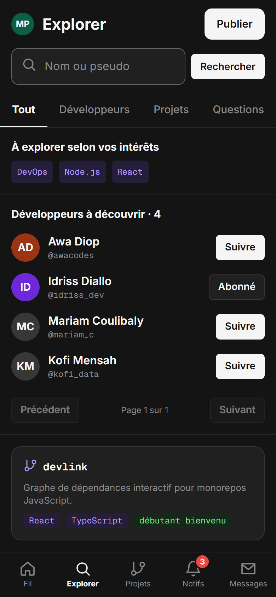
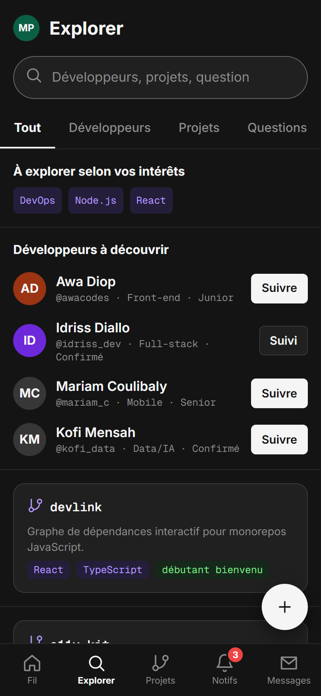
PATCH /notifications/read-all.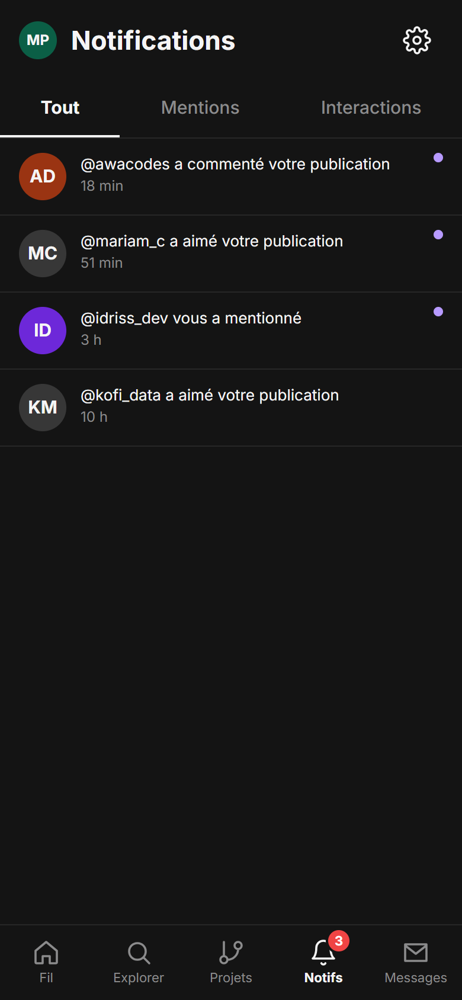
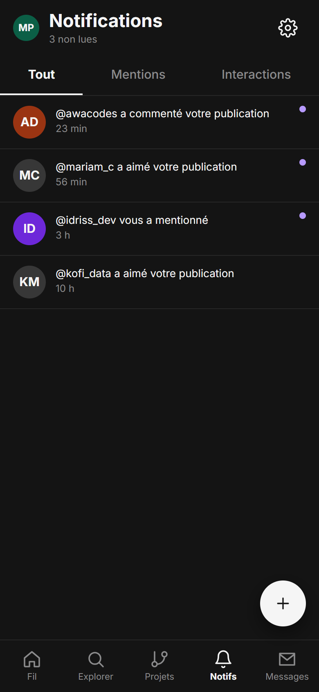
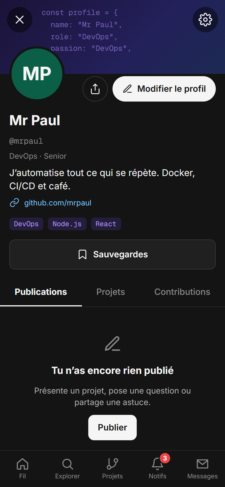
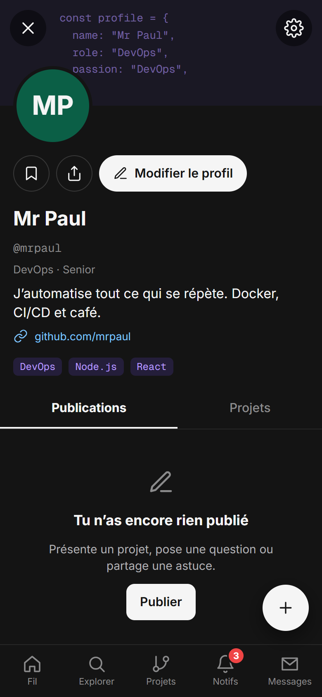
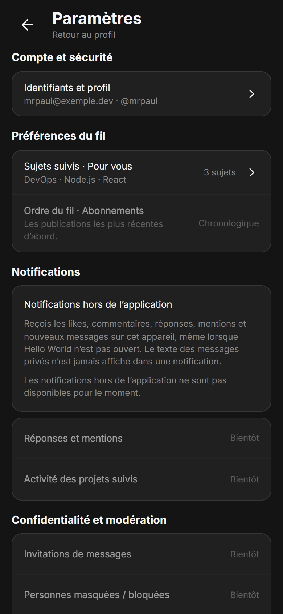
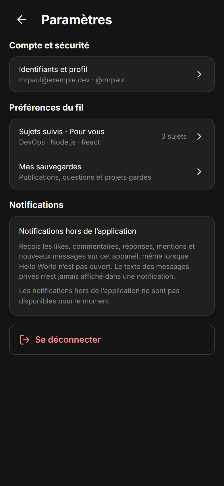
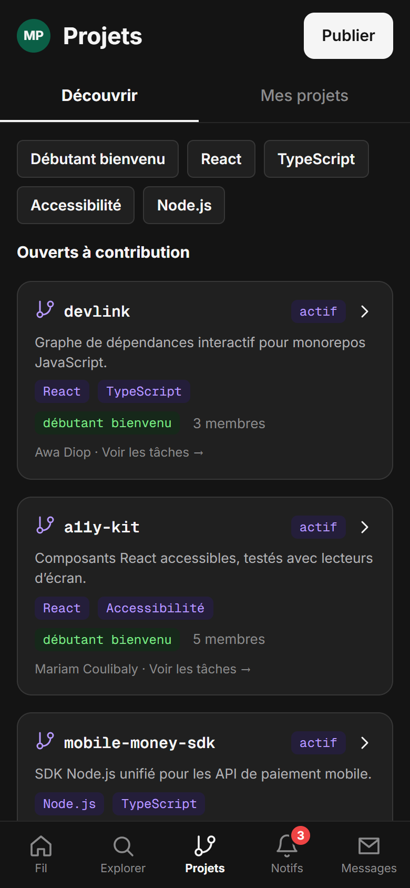
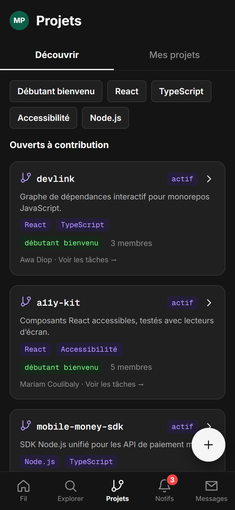
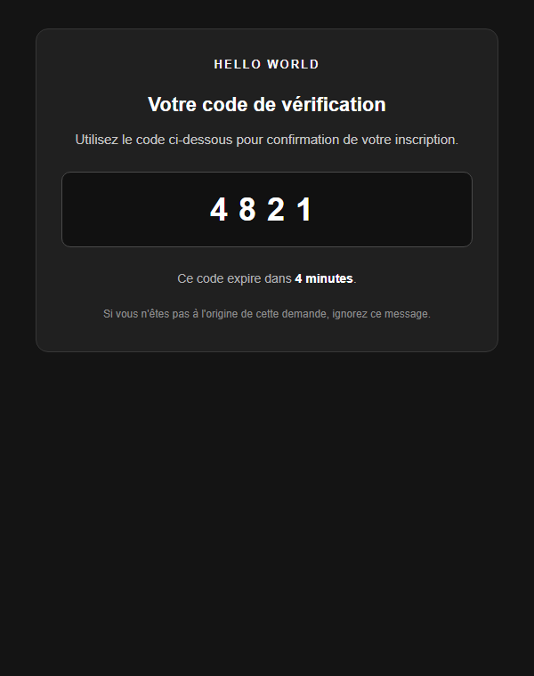
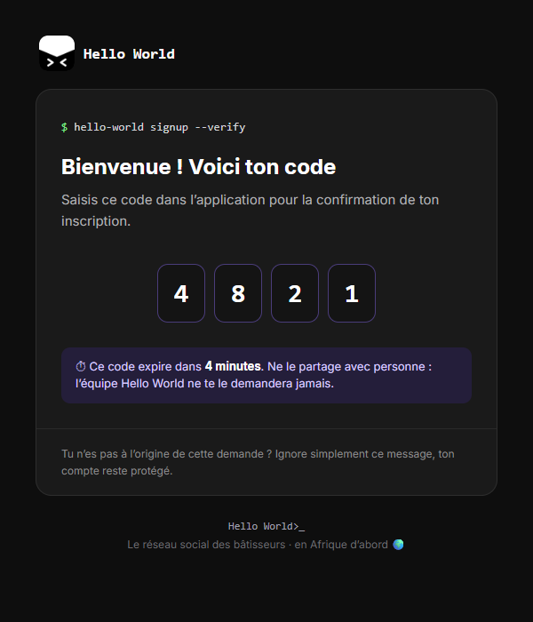